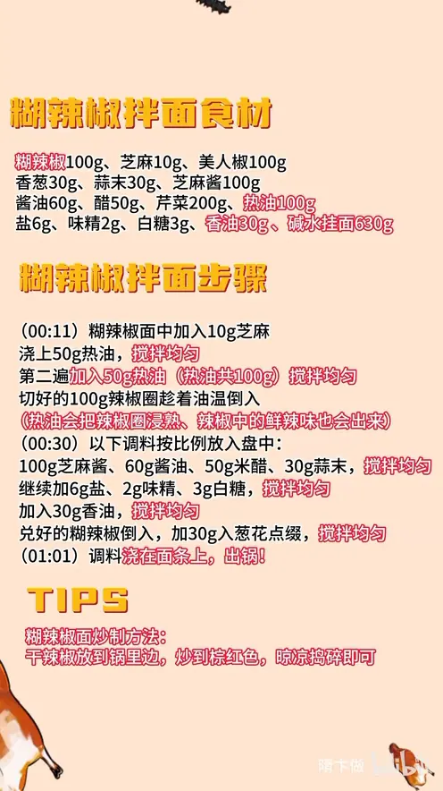

糊辣椒拌面
隋卞一做。糊辣椒面分两次泼入共 100g 热油，趁油温把 100g 美人椒圈浸熟，鲜辣味全出；再与 100g 芝麻酱、60g 酱油、50g 醋等调成酱，浇在 630g 碱水挂面上拌匀。
原视频：https://www.bilibili.com/video/BV1YS421X7ie
食材
糊辣椒、芝麻、美人椒 等 15 样
| 类别 | 用料 | 用量 |
|---|---|---|
| 主料 | 糊辣椒 | 100g |
| 主料 | 碱水挂面 | 630g |
| 辅料 | 芝麻 | 10g |
| 辅料 | 美人椒 | 100g |
| 辅料 | 香葱 | 30g |
| 辅料 | 蒜末 | 30g |
| 辅料 | 芹菜 | 200g |
| 调料 | 芝麻酱 | 100g |
| 调料 | 酱油 | 60g |
| 调料 | 醋 | 50g |
| 调料 | 热油 | 100g |
| 调料 | 盐 | 6g |
| 调料 | 味精 | 2g |
| 调料 | 白糖 | 3g |
| 调料 | 香油 | 30g |
步骤
- 泼糊辣椒：糊辣椒面中加入 10g 芝麻，浇上 50g 热油，搅拌均匀。
- 二次泼油：第二遍加入 50g 热油（热油共 100g），搅拌均匀；切好的 100g 辣椒圈趁着油温倒入，热油会把辣椒圈浸熟，辣椒中的鲜辣味也会出来。
- 调底料：以下调料按比例放入盘中——100g 芝麻酱、60g 酱油、50g 醋、30g 蒜末，搅拌均匀。
- 调味：继续加 6g 盐、2g 味精、3g 白糖，搅拌均匀；再加入 30g 香油，搅拌均匀。
- 合酱：兑好的糊辣椒倒入，加 30g 葱花点缀，搅拌均匀。
- 拌面：调料浇在面条上，拌匀出锅。
小贴士
- 糊辣椒面炒制方法：干辣椒放到锅里边，炒到棕红色，晾凉捣碎即可。
讲解要点
难度：★☆☆☆☆（几乎有手就行，唯一要拿捏的是泼油的油温和糊辣椒的炒制）
为什么这么做
- 糊辣椒分两次泼油：一次只泼一半、边泼边搅，辣椒面受热更均匀，不会上面焦、下面还是生的；第二遍补油把香气彻底激出来。
- 趁油温下辣椒圈：热油把生辣椒圈浸熟，鲜辣味融进油里，辣味也变得柔和、不燥。
- 先澥芝麻酱、再补液体调料：芝麻酱先用酱油、醋、蒜末澥开，再加盐、味精、白糖，最后放香油，酱才顺滑、拌得开。
- 糊辣椒最后合入：辣椒面吸饱油后还保留颗粒和糊香，最后拌进去口感才有层次。
- 用碱水挂面：碱水面筋道、挂得住酱，拌完不容易坨。
容易翻车
- 油温太高，辣椒面一下去就焦苦；油温太低又泼不出香。
- 100g 油一次全倒进去，辣椒面受热不均，容易夹生。
- 芝麻酱没澥开就加盐糖，酱会抱团、拌不开。
- 糊辣椒炒过头炒成黑色，整碗面都发苦，炒到棕红色就够。
原片尾卡

原片文案
AI 字幕校准稿
去年给你们做了一个凉面，收到了这么多人的喜欢，说句全网无差评不过分吧。今天给你们来一个 2.0 的升级版——糊辣椒拌面。糊辣椒拌面的精华就是这个糊辣椒，加上芝麻搅和搅和，烧好的热油浇在辣椒面上搅和搅和，然后再浇第二遍，让它均匀受热，这样就可以了。切好的辣椒圈趁着这个油温也放进去，热油会把辣椒圈浸熟，辣椒里面也就有了点鲜辣味。
下一个步骤，这些调料按比例放入盘中：芝麻酱、酱油、米醋、蒜末，盐、味精、白糖，给它搅拌均匀，再放香油。然后把咱们炸过的糊辣椒放在里边，最后放点葱花点缀。就这酱，你看着不迷糊吗？昨天试做的时候公司人没吃够，今天做了这么大一盘。
吃着有一种糊香，然后辣辣的，一点都不燥，还有麻酱那种醇香。这个麻酱你看不出来，它只是体现出那个香味，吃着不糊嘴，完全不糊嘴。全是那个辣椒的焦香，还有点那种木姜子味。去年教大家鸡丝凉面，今年糊辣椒拌面，每年教大家一个面，一直干到我退休。也祝大家面面俱到，大家试起来吧，再见。
整理自「隋卞一做」系列视频，仅供个人学习。